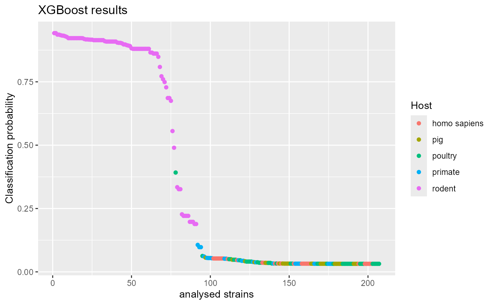
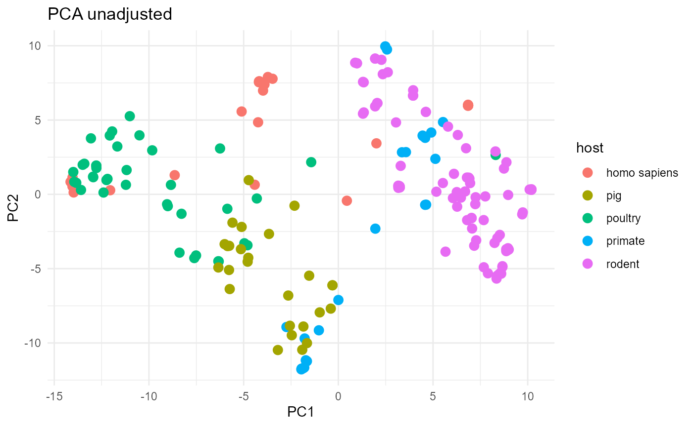
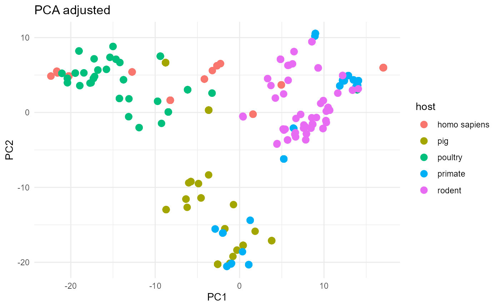

Introduction
In this vignette we will explore the function
get_bags(). This function is used internally in both
aurora_pheno() and aurora_GWAS() but can be
also accessed directly upon installing aurora. The function
takes a dataset of microbial strains and returns a bootstrapped dataset
that is adjusted for population structure. get_bags() has
many possible uses and we will demonstrate a few here.
Description of function get_bags()
This function requires two inputs. The phenotype matrix
(pheno_mat) which has to be in the same format as the one
used in aurora_pheno() and aurora_GWAS() and a
phylogenetic reconstruction. This can be either a phylogenetic tree
loaded as a phylo object or a distance matrix that contains phylogenetic
pairwise distances (core genome amino acid identities (cAAI) or average
nucleotide identities (ANI) converted to distances).
Objective
Example 1: aurora_pheno() uses a grid search to
fine-tune hyperparameters for Random Forest and AdaBoost. However, this
process is very time consuming. Additionally, the user is only
restricted to the parameters that are in the grid that
aurora_pheno() uses (see supplementary materials in the
aurora paper). However, you can use get_bags() to
get adjusted datasets and then use your favorite hyperparameter search
method to get the best results.
Example 2: aurora_pheno() uses four machine learning
algorithms to identify the mislabeled strains. However, these machine
learning algorithms may not be optimal for your dataset and you may want
to explore other options. Machine learning algorithms often learn the
phylogenetic background rather than the existing causal features. To
minimize this issue we will first use get_bags() to obtain
multiple bootstrapped datasets that are adjusted for phylogenetic
non-independence and then construct corresponding XGBoost models. The
results from these models will be combined to obtain the most probable
causal features and to identify potentially mislabeled strains (a simple
implementation of aurora_pheno() and
aurora_GWAS()).
Example 3: In scientific literature I often encounter plots that are
showing cluster analysis of microbial strains. The results of the
analysis are then displayed in two dimensions. Such plots are supposed
to convince us that i.e., cluster A is more associated with
trait B. Moreover, some dimensionality reduction techniques, like PCA,
aims to capture the maximum variability in the dataset. However,
population structure and sampling bias can distort such plot. We will
use function get_bags() to reduce the influence of
population structure and sampling bias. First we will obtain a
population adjusted dataset and then we will calculate Jaccard distance
between all strains. The resulting distance matrix will be plotted to
two dimensions.
library(aurora)
library(readr)
library(ape)
library(mlr)
library(dplyr)
library(randomForest)
library(xgboost)
library(ggplot2)
library(proxy)
library(FactoMineR)Now let’s load some data. We will use Limosilactobacillus reuteri datset. This dataset contains 207 strains from five different hosts. As a feature table we will use pangenome matrix produced by Panaroo. We will first need to convert this pangenome into a binary format. Additionally, we will filter out the most common (present in more than 95% of all strains) and the rarest (present in less than 10% of all strains) genes.
data("pheno_mat_reuteri") # loads the phenotype for each strain
data("bin_mat_reuteri") # loads the pangenome matrix
data("tree_reuteri") # loads the core-genome phylogenetic tree
# convert the pangenome matrix to binary matrix
bin_mat <- as.data.frame(bin_mat)
fut_row_names <- bin_mat$Gene
bin_mat <- bin_mat[, -1:-14]
bin_mat <- bin_mat %>%
mutate_all(~replace(., is.na(.), 0)) %>%
mutate_all(~replace(., .!=0, 1))
bin_mat <- sapply(bin_mat, as.numeric)
bin_mat <- t(bin_mat)
colnames(bin_mat) <- fut_row_names
bin_mat <- bin_mat[match(pheno_mat$ids, rownames(bin_mat)), ]
no_gf <- nrow(bin_mat)
cutoff <- no_gf * (95/100) # remove abundat features
select_ID_up <- which(colSums(bin_mat) < cutoff)
cutoff <- no_gf * (5/100) # remove rare features
non_select_ID_low <- which(colSums(bin_mat) > cutoff)
bin_mat <- bin_mat[, intersect(select_ID_up, non_select_ID_low)]Example 1
With the data loaded we can run get_bags() to obtain the
bootstrapped dataset. aurora uses two algorithms to bootstrap
the data: phylogenetic_walk and random_walk.
This is controlled by a parameter bagging. If you wish to
find out the distinctions between the two algorithms, please refer to
the supplementary materials of the aurora paper. Both
algorithms are stochastic and therefore you should either repeat the
hyperparameter tuning multiple times (each time with different
bootstrapped dataset) or you can simply set the parameter
bag_size to a large number. This parameter controls how
many strains from each class will be selected to the bootstrapped
dataset. If you want to repeat the parameter search multiple times, you
can get multiple bags with just one run of get_bags() by
changing the parameter no_rf. In this case, we will set
bag_size to a large number and then use random
hyperparameter search to find the best hyperparameters for random forest
model.
# Get the train dataset
bag <- get_bags(pheno_mat,
dist_mat_or_tree = tree,
bag_size = c(200, 200, 200, 200, 200) # number of strains in each class
)
# The number of strains in each class should be balanced for Random Forest
# Get bags also outputs $count which shows the number of strain repetitions
# Construct new pheno_mat and bin_mat
boot_pheno_mat <- data.frame(ids = bag$bags[[1]],
pheno = pheno_mat$pheno[match(bag$bags[[1]], pheno_mat$ids)])
boot_bin_mat<- as.data.frame(bin_mat[match(bag$bags[[1]], rownames(bin_mat)), ])
boot_bin_mat$host <- boot_pheno_mat$pheno
# gene names from panaroo are not valid column names
gene_names <- colnames(boot_bin_mat)[1:ncol(boot_bin_mat)-1]
colnames(boot_bin_mat)[1:ncol(boot_bin_mat)-1] <- paste0(rep("gene", ncol(boot_bin_mat)-1), 1:(ncol(boot_bin_mat)-1))Now we are ready to run the hyperparameter tuning. Any method can be
used (random search, manual search, gird search, Bayesian optimization,
etc.). In this case, random search will be used. This method is
implemented in package mlr. We need to choose a measurement
of the models’ performance. In real scenario, you might want to use AUC
or an F1
Score however let’s keep things simple here and use accuracy. Keep
in mind that the grid search that aurora_pheno() uses takes
a long time to complete (especially if the your dataset has over 500
strains, over 10,000 features and more than two classes). In such a case
you are forced to find your own hyperparameters.
task <- makeClassifTask(data = boot_bin_mat, target = "host")
# define hyperparameter search space
param_set <- makeParamSet(
makeIntegerParam("sampsize", lower = 50, upper = 200),
makeIntegerParam("ntree", lower = 50, upper = 500),
makeIntegerParam("mtry", lower = 10, upper = 1000),
makeIntegerParam("maxnodes", lower = 4, upper = 20)
)
ctrl <- makeTuneControlRandom(maxit = 10) # set search method as random
result <- tuneParams(
makeLearner("classif.randomForest"),
task,
resampling = makeResampleDesc("CV", iters = 4), # 4-fold cross-validation
measures = list(acc), # Use accuracy as the performance measure
par.set = param_set,
control = ctrl
)
best_params <- result$xThe best hyperparameters are now in list best_paramsand
we can use it to run aurora_pheno() (run only with random
forest).
data("pheno_mat_reuteri")
data("bin_mat_reuteri")
data("tree_reuteri")
results_aurora <- aurora_pheno(pheno_mat = pheno_mat,
bin_mat = bin_mat,
type_bin_mat = "panaroo",
tree = tree,
fit_parameters = FALSE,
sampsize = best_params$sampsize,
mtry = best_params$mtry,
ntree = best_params$ntree,
maxnodes = best_params$maxnodes,
ovr_log_reg = FALSE,
adaboost = FALSE,
CART = FALSE,
write_data = FALSE)Example 2:
In this example we will use the function get_bags() to
get 10 bootstrapped datasets. This datasets will be used as training
datasets to construct 10 corresponding XGBoost models. We don’t want the
training dataset to be too large. This could lead to extensive strain
repetition which could result in XGBoost models that learned the
features present in those repeating strains.
# Get the train dataset
bag <- get_bags(pheno_mat,
dist_mat_or_tree = tree,
bag_size = c(20, 20, 20, 20, 20), # number of strains in each class
no_rf = 10, # specify the number of datasets
bagging = "phylogenetic_walk" # specify the bagging algorithm
)Now that the 10 training datasets were obtained, we can start building XGBoost models. Once an XGBoost model is built we can pull out the importances (feature gains in this case) and we can also use the model to predict classification probabilities of the original dataset. In case of a multiclass problem the feature importances will not make much sense. Thus, let’s reduce the number of classes to two: rodent and the rest.
# make a list that will hold all the feature importances
importances <- vector(mode = "list", 10)
# make a list that will hold all the classification probabilities
probs <- vector(mode = "list", 10)
# gene names from panaroo are not valid column names
gene_names <- colnames(bin_mat)[1:ncol(bin_mat)]
bin_mat_adjust <- bin_mat
colnames(bin_mat_adjust)[1:ncol(bin_mat_adjust)] <- paste0(rep("gene", ncol(bin_mat_adjust)), 1:(ncol(bin_mat_adjust)))
names(gene_names) <- colnames(bin_mat_adjust)
for (i in 1:10) {
# Construct new pheno_mat and bin_mat
boot_pheno_mat <- data.frame(ids = bag$bags[[i]],
pheno = pheno_mat$pheno[match(bag$bags[[i]], pheno_mat$ids)])
boot_pheno_mat$pheno <- ifelse(boot_pheno_mat$pheno == "rodent", 1, 0) # 1 = rodent, 0 = other host
boot_bin_mat<- as.data.frame(bin_mat_adjust[match(bag$bags[[i]], rownames(bin_mat_adjust)), ])
# train XGBoost model
model <- xgboost(data = as.matrix(boot_bin_mat),
label = boot_pheno_mat$pheno,
nrounds = 10,
objective = "binary:logistic",
verbose = 0)
importances[[i]] <- as.matrix(xgb.importance(model = model)[,c(1,2)])
probs[[i]] <- predict(model, bin_mat_adjust)
}The last step is to calculate median for all feature importances and the number of times it was used in the 10 models. Additionally, the median of the 10 classification probabilities will also be calculated. This will allow us to identify potentially mislabeled strains.
# analyze the classification probabilities
medians <- apply(do.call(cbind, probs), 1, median)
df_probs <- data.frame(ids = rownames(bin_mat_adjust),
probs_med = medians,
host = pheno_mat$pheno)
# analyze the feature importances
df_importances <- as.data.frame(do.call(rbind, importances))
df_importances$Feature <- gene_names[match(df_importances$Feature, names(gene_names))]
features <- as.data.frame(table(df_importances$Feature))
features <- features[features$Freq > 1, ]
features$importance <- rep(NA, nrow(features))
for (i in 1:nrow(features)) {
features$importance[i] <- median(as.numeric(df_importances$Gain[df_importances$Feature == features$Var1[i]]))
}
features <- features[order(features$Freq, features$importance, decreasing = TRUE), ]
colnames(features) <- c("Gene", "Frequence", "Importance")
# print the top 15 features along with their frequences in the 10 models and the median of their importances
knitr::kable(features[1:15,], format = "html", table.attr = "class='table table-striped'")| Gene | Frequence | Importance | |
|---|---|---|---|
| 95 | menC~~~menC_1 | 8 | 0.2945214 |
| 2 |
arlR_2~ |
6 | 0.1154578 |
| 16 | group_1477 | 6 | 0.0544126 |
| 23 | group_2082 | 5 | 0.0530852 |
| 102 | ureD1 | 5 | 0.0394799 |
| 25 | group_2194 | 4 | 0.1292370 |
| 22 | group_2077 | 4 | 0.0430572 |
| 35 | group_2524 | 4 | 0.0390301 |
| 101 | rspR | 4 | 0.0114454 |
| 77 | group_4980 | 3 | 0.1378386 |
| 84 | group_5689 | 3 | 0.0767048 |
| 4 | azoR | 3 | 0.0223808 |
| 54 | group_3253 | 3 | 0.0221101 |
| 43 | group_2882 | 3 | 0.0205886 |
| 18 | group_1839 | 3 | 0.0201992 |
head(features, 15)
#> Gene Frequence Importance
#> 95 menC~~~menC_1 8 0.29452140
#> 2 arlR_2~~~rssB~~~arlR_1~~~regX3 6 0.11545777
#> 16 group_1477 6 0.05441258
#> 23 group_2082 5 0.05308520
#> 102 ureD1 5 0.03947990
#> 25 group_2194 4 0.12923699
#> 22 group_2077 4 0.04305723
#> 35 group_2524 4 0.03903010
#> 101 rspR 4 0.01144544
#> 77 group_4980 3 0.13783858
#> 84 group_5689 3 0.07670478
#> 4 azoR 3 0.02238081
#> 54 group_3253 3 0.02211014
#> 43 group_2882 3 0.02058855
#> 18 group_1839 3 0.02019920These results contain some of the experimentally confirmed rodent colonization factors and we can thus conclude that the models (at least partially) were able to identify causal features. In the next cell, we will plot the classification probabilities. This will allow us to identify strains that might be mislabeled.
df_probs <- df_probs[order(df_probs$probs_med, decreasing = TRUE), ]
ggplot(df_probs, aes(x = 1:nrow(df_probs), y = probs_med, color = host)) +
geom_point() +
labs(title = "XGBoost results",
x = "analysed strains",
y = "Classification probability",
color = "Host")
Assuming that the model does not overfit or underfit we would conclude that the majority of L. reuteri rodent strains are autochthonous in the host while a few strains appear to be mislabeled. For more thorough discussion on L. reuteri adaptation mechanisms see the main aurora manuscript.
Example 3:
In this last example we will compare two plots. One plot will show a
the original L. reuteri dataset, the other will show the
boostrapped L. reuteri dataset. Using get_bags()
should result in mitigating the bias that originates from population
structure and sampling bias.

The unadjusted plot is not as well separated as the adjusted plot. Specifically, the porcine strains are intermixed with poultry strains in the unadjusted plot. As we show in the main aurora paper, isolates from these two hosts are actually very distinct from each other but the unadjusted analysis does not communicate this well.